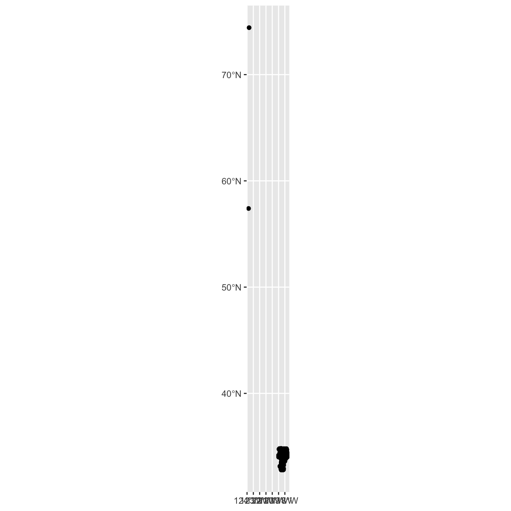

Creating maps
Last updated on 2024-05-24 | Edit this page
Overview
Questions
- How do we create maps using R?
Objectives
- Learn how to create static maps with ggplot2
- Learn how to create interactive maps with mapview
- Learn how to plot iNaturalist observations on a map
R
library(sf)
library(dplyr)
library(readr)
library(ggplot2)
library(mapview)
Geographic data
There are various file formats for geographic data. Shape files for GIS applications, KML for Google maps, geojson for web applications.
You can get boundaries for countries, states, cities, etc from various sources. I googled “Los Angeles county boundary shape” which had a link to “County Boundary | City of Los Angeles Hub - LA GeoHub” https://geohub.lacity.org/datasets/10f1e37c065347e693cf4e8ee753c09b I downloaded the shapefile for LA county.
You can also create your boundaries using GIS applications or GIS web applications.
Mapping iNaturalist data
iNaturalist data includes latitude and longitude, which means we can put the observations in a map. There are several packages to create maps. We will use ggplot and mapview packages.
First, read data from the cleaned iNaturalist observation file.
R
inat <- read_csv('data/cleaned/observations.csv')
OUTPUT
Rows: 93950 Columns: 39
── Column specification ────────────────────────────────────────────────────────
Delimiter: ","
chr (23): observed_on_string, time_observed_at, time_zone, user_login, user...
dbl (10): id, user_id, num_identification_agreements, num_identification_di...
lgl (5): captive_cultivated, private_place_guess, private_latitude, privat...
date (1): observed_on
ℹ Use `spec()` to retrieve the full column specification for this data.
ℹ Specify the column types or set `show_col_types = FALSE` to quiet this message.See all the column names. “latitude” and “longitude” are the column names we need.
R
names(inat)
OUTPUT
[1] "id" "observed_on_string"
[3] "observed_on" "time_observed_at"
[5] "time_zone" "user_id"
[7] "user_login" "user_name"
[9] "created_at" "updated_at"
[11] "quality_grade" "license"
[13] "url" "image_url"
[15] "sound_url" "tag_list"
[17] "description" "num_identification_agreements"
[19] "num_identification_disagreements" "captive_cultivated"
[21] "oauth_application_id" "place_guess"
[23] "latitude" "longitude"
[25] "positional_accuracy" "private_place_guess"
[27] "private_latitude" "private_longitude"
[29] "public_positional_accuracy" "geoprivacy"
[31] "taxon_geoprivacy" "coordinates_obscured"
[33] "positioning_method" "positioning_device"
[35] "species_guess" "scientific_name"
[37] "common_name" "iconic_taxon_name"
[39] "taxon_id" We use the sf package to add geographic data to our dataframe.
st_as_sf() from sf package will take the
longitude and latitude and add a geometry column that we
can use for mapping.
- We pass in longitude and latitude columns to coors argument. Must wrap longitude and latitude in quotes.
- crs is coordinate reference system.
-
remove=FALSEwill keep the cooridate columns in the dataframe
R
temp <- inat %>%
st_as_sf(coords = c("longitude", "latitude"), crs = 4326, remove=FALSE)
use names() to get a list of all the columns. A
geometry column was added.
R
names(temp)
OUTPUT
[1] "id" "observed_on_string"
[3] "observed_on" "time_observed_at"
[5] "time_zone" "user_id"
[7] "user_login" "user_name"
[9] "created_at" "updated_at"
[11] "quality_grade" "license"
[13] "url" "image_url"
[15] "sound_url" "tag_list"
[17] "description" "num_identification_agreements"
[19] "num_identification_disagreements" "captive_cultivated"
[21] "oauth_application_id" "place_guess"
[23] "latitude" "longitude"
[25] "positional_accuracy" "private_place_guess"
[27] "private_latitude" "private_longitude"
[29] "public_positional_accuracy" "geoprivacy"
[31] "taxon_geoprivacy" "coordinates_obscured"
[33] "positioning_method" "positioning_device"
[35] "species_guess" "scientific_name"
[37] "common_name" "iconic_taxon_name"
[39] "taxon_id" "geometry" use select to pick which columns to use.
R
inat_map <- inat %>%
st_as_sf(coords = c("longitude", "latitude"), crs = 4326, remove=FALSE) %>%
select(id, user_login, common_name, scientific_name, observed_on, url, longitude, latitude, geometry)
static map
Use ggplot to plot the observations. geom_sf will use
geometry column to produce a map.
R
ggplot() +
geom_sf(data = inat_map)
 There are some observations that are outside of Los Angeles. Use filter to select observations in LA.
R
inat_map <- inat_map %>%
filter(latitude < 40)
create map with ggplot.
R
ggplot() +
geom_sf(data = inat_map)

Use dim() to show the number of rows and columns. There
are over 90K rows.
R
dim(inat_map)
OUTPUT
[1] 93948 9interactive map
use mapview package to create interactive maps.
Since there are over 90K rows, an interactive map will be very slow. I suggest not using mapview if there are lots of rows.
To speed up the interactive map, let’s filter the list of observations. Get all observations for Western Fence Lizard.
R
inat_lizard <- inat_map %>%
filter(common_name == 'Western Fence Lizard')
Use dim to get number of rows. About 3000 rows.
R
dim(inat_lizard)
OUTPUT
[1] 2936 9Create interactive map. You can zoom in and out. Click on observation to see the info.
R
mapview(inat_lizard)
working with other geographic files
Let’s add LA county boundaries to the map.
I downloaded the LA county boundaries from https://geohub.lacity.org/datasets/lacounty::county-boundaries/explore
use read_sf() from sf package to read the
shape file.
R
la_county <- read_sf('data/raw/County_Boundary/County_Boundary.shp')
la_county
OUTPUT
Simple feature collection with 7 features and 17 fields
Geometry type: MULTIPOLYGON
Dimension: XY
Bounding box: xmin: -118.9446 ymin: 32.79521 xmax: -117.6464 ymax: 34.8233
Geodetic CRS: WGS 84
# A tibble: 7 × 18
CITY CITY_ID CITY_TYPE CITY_NAME CITY_LABEL COLOR_CODE ABBR CITY_NO
<int> <int> <chr> <chr> <chr> <int> <chr> <int>
1 250 31 Unincorporated Unincorporat… Unincorpo… 1 UNIN 0
2 250 31 Unincorporated Unincorporat… Unincorpo… 1 UNIN 0
3 250 31 Unincorporated Unincorporat… Unincorpo… 1 UNIN 0
4 250 31 Unincorporated Unincorporat… Unincorpo… 1 UNIN 0
5 250 31 Unincorporated Unincorporat… Unincorpo… 1 UNIN 0
6 250 31 Unincorporated Unincorporat… Unincorpo… 1 UNIN 0
7 250 31 Unincorporated Unincorporat… Unincorpo… 1 UNIN 0
# ℹ 10 more variables: DESCRIPTN <chr>, URL <chr>, PHONE <chr>,
# OF_AREA_SM <int>, FEAT_TYPE <chr>, COMMENT <chr>, SUB_TYPE <int>,
# COLOR <chr>, OBJECTID <int>, geometry <MULTIPOLYGON [°]>add LA County to maps.
R
ggplot() +
geom_sf(data = la_county) +
geom_sf(data = inat_lizard)

R
mapview(la_county) +
mapview(inat_lizard)
Exploring iNaturlist data
Lets look for all iNaturalist observations made in Exposition Park.
I downloaded the boundaries for Exposition Park using this site https://wykhuh.github.io/draw-map-boundaries/
R
expo_park <- st_read('data/raw/boundaries_expo_park_area.geojson') %>%
st_transform(4326)
OUTPUT
Reading layer `boundaries_expo_park_area' from data source
`/Users/wyk/Development/science/city_nature_challenge/NHMLA_workshop/CNC-coding-workshop/site/built/data/raw/boundaries_expo_park_area.geojson'
using driver `GeoJSON'
Simple feature collection with 1 feature and 2 fields
Geometry type: POLYGON
Dimension: XY
Bounding box: xmin: -118.2915 ymin: 34.01096 xmax: -118.2829 ymax: 34.01806
Geodetic CRS: WGS 84plot map of Expo Park.
R
ggplot() +
geom_sf(data = expo_park)

R
mapview(expo_park)
We want to get observation inside Expo Park.
You should check if the crs for the inaturalist data and the Expo Park are the same
R
st_crs(expo_park) == st_crs(inat_map)
OUTPUT
[1] TRUEUse st_intersection() to get all observations that
inside of Exposition Park.
R
inat_expo <- inat_map %>% st_intersection(expo_park)
WARNING
Warning: attribute variables are assumed to be spatially constant throughout
all geometriesUse dim to get row and column count. 93K in LA county. 1191 observation in Expo Park.
R
dim(inat_map)
OUTPUT
[1] 93948 9R
dim(inat_expo)
OUTPUT
[1] 1191 11Create map of all observations in Expo Park.
R
ggplot() +
geom_sf(data = expo_park) +
geom_sf(data = inat_expo)
R
mapview(expo_park) +
mapview(inat_expo)

Use alpha.regions to set opacity. use col.regions to set color.
R
mapview(expo_park, alpha.regions=0.3, col.regions="#333333") +
mapview(inat_expo)